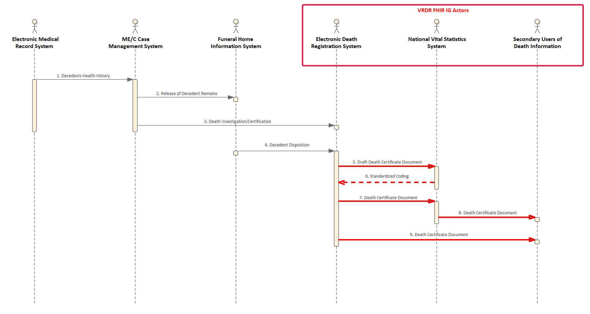

1.2.0 - STU 2 (Post-Ballot, Pre-Publication Draft)
1.2.0 - STU 2 (Post-Ballot, Pre-Publication Draft)
VRDR - Local Development build (v1.2.0). See the Directory of published versions
The scope of this VRDR FHIR IG is the reporting of incidents of death by State Registrars to the NCHS. The data content of this dataflow contains an aggregation of data collected in preceding dataflows and used in additional dataflows related to the secondary use of death information such as clinical research, law enforcement, and health policy determination.
 |
While the scope of this IG is limited to death reporting by State Registrars to the NCHS, the FHIR Resource Profiles have been designed with the intent of being reusable in related preceding and antecedent dataflows.
The actors supported in this implementation guide include:
|  |
The sequence of exchanges supported in this implementation guide include:
* (5) Draft death certificate document from regional EDRS to the NVSS.
In this exchange the regional EDRS sends a draft of the death certificate document with text values for causes of death and decedent race/ethnicity to the NVSS to be encoded.
* (6) Standardized cause of death and decedent race/ethnicity coding from the NVSS to regional EDRS.
In this exchange the NVSS returns the draft death certificate document with coded values for causes of death and decedent race/ethnicity to the regional EDRS.
* (7) Final death certificate document from regional EDRS to the NVSS.
In this exchange the regional EDRS send the final death certificate to the NVSS. This exchange also supports the sending of a revised, amended, or replacement death certificate.
* (8) Death certificate document from the NVSS to death information secondary users.
In this exchange the NVSS sends a copy of the death certificate document it received from the regional EDRS to secondary users of death information.
* (9) Death certificate document from regional EDRS to death information secondary users.
In this exchange the regional EDRS send a copy of the final death certificate document to secondary users of death information.
IG © 2021+ HL7 Public Health Working Group. Package hl7.fhir.us.vrdr#1.2.0 based on FHIR 4.0.1. Generated 2021-09-22
Links: Table of Contents |
QA Report
| Version History |
Search |
 |
Propose a change
|
Propose a change